How the full Ask VCFO plan works, in pictures: one chat on top of the Answer, Do and Watch engines. This is a design and nothing here is built yet. The demo screens are mockups, and their people, companies and government notices are invented samples. For detail, see the master plan.
One chat on top of three engines. Answer and Do start when a person asks. Watch runs on its own schedule, feeds the chat and sends notifications through the app.
Each message stops at the first step that can handle it. Today, every typed message starts at the small model and most then use about 11,000 more tokens. Figures are estimates per message.
You ask in one box and the plan picks the right method. Exact facts stay live and are counted by code. RAG handles text, where similar meaning helps.
Most steps are plain code and cost no tokens. The model has no tools, and code checks its summary against the source. Clients see an update only after a manager reviews it.
Tested once each on 6 November from this laptop with the app's real name. Results may differ from AWS, and each site's terms need reading before it goes live.
You say what you want. Ask VCFO looks things up and proposes the change. You approve it, and it saves through the same rules as the screens.
Today the chat can only read. The new path adds a review card and moves the rules into one place that the chat and the screens share.
The model reads and chooses. Code checks everything around it, and asks you when it is unsure. Example values are sample data.
This is the most important safety choice. The agent works with your access, so the existing role checks still apply to every action.
Where each part runs and what travels between parts. The agent can only ask for a preview, and writes start from the approve click. The Watch job shares Postgres and writes through system repository functions. Embedding calls go to Bedrock from the same jobs.
Your example question. Code counts with the access of the person asking, so an admin sees the firm's number and a lead sees their own. When code recognises the question, no model is called.
The chat sends nothing. App code posts the update after a manager reviews it. Staff can see it before that, marked "Not yet reviewed".
The router joins the update with this client's own data. Your existing checks test the answer. A question that needs a firm decision still goes to a person.
The main flow. Nothing is saved before the review card. Any doubt becomes a question.
Ask VCFO drafts, and the lead checks. Where a step needs a manager today, the manager still approves it. The email goes out only after that.
Clients work only on their own company and their own fields. What they send still goes to the lead for review.
A run keeps going if you close the page, and it waits for you for as long as needed. When a run stops or is cancelled, nothing is saved.
The model stops at the dashed line. Login, OTP, DSC and payment stay with a person. This path is on hold until you have written CS approval.
Each image shows a question or event and what would happen on the website. Where a chat appears, it is on the right and the normal page is on the left.
Question: "How many companies are incorporated this year?"
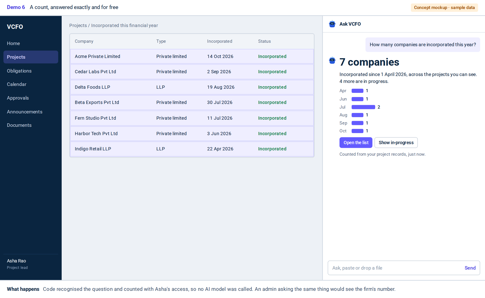
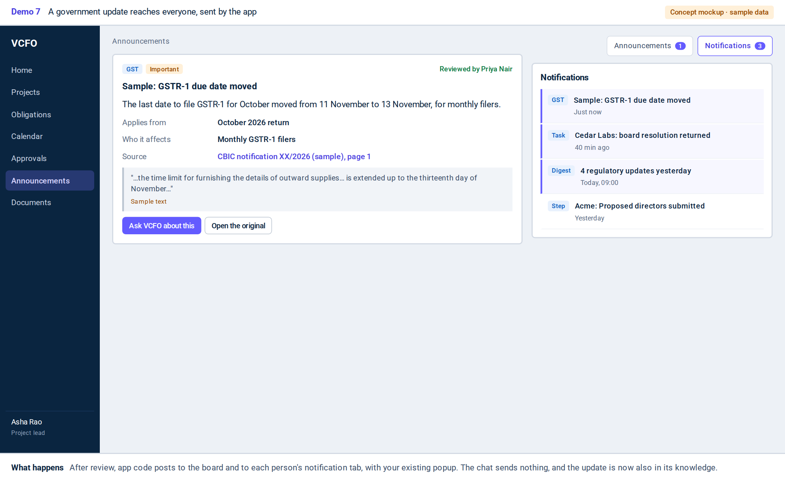
Question: "What changed in GST this week? Does it affect Acme?"
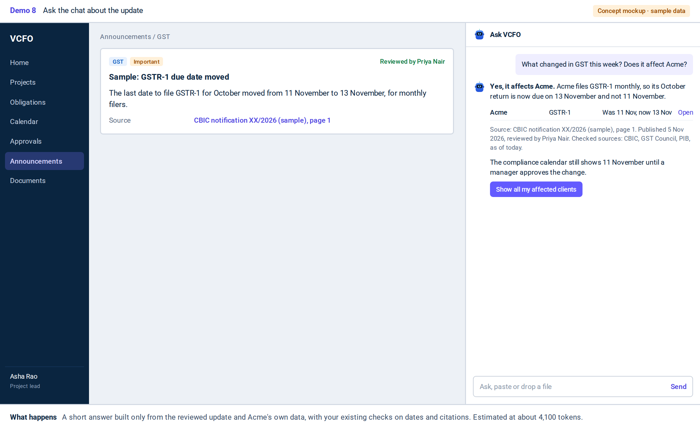
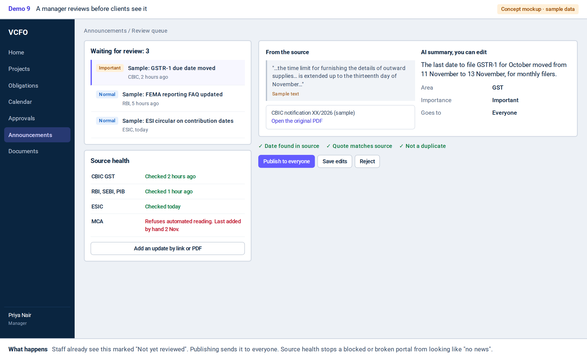
Question: "Add this as director 2 for Acme"
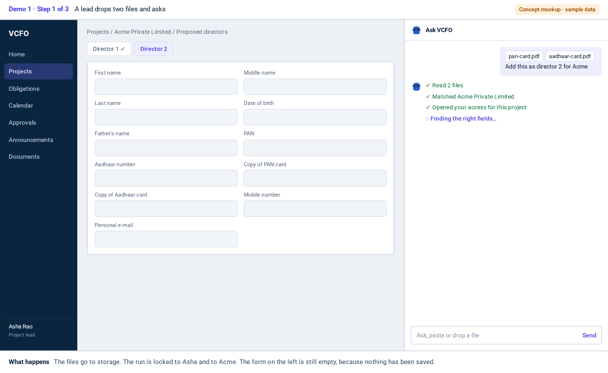
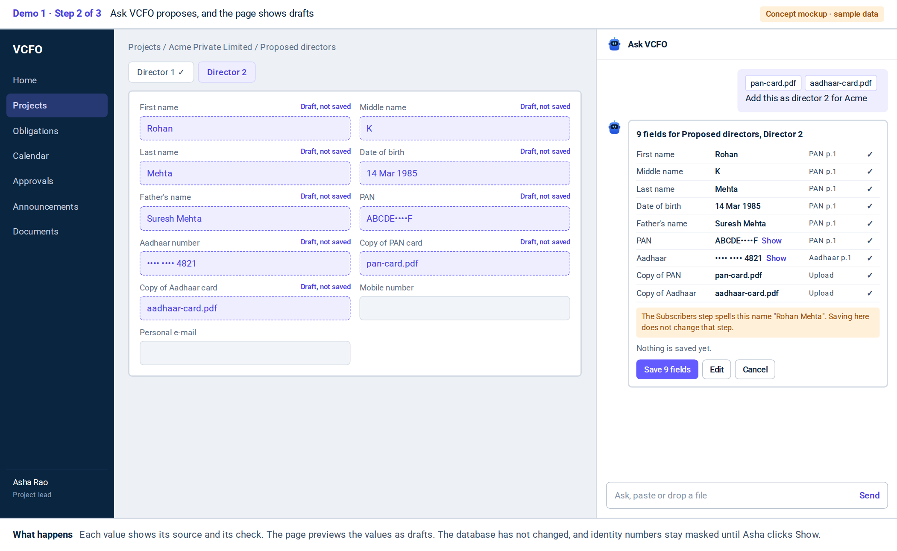
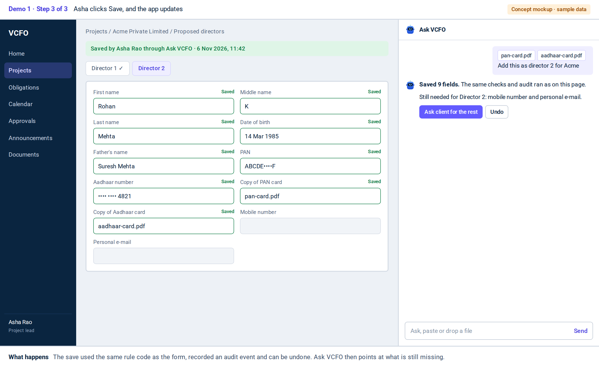
Question: "What is overdue or due in the next 7 days?"
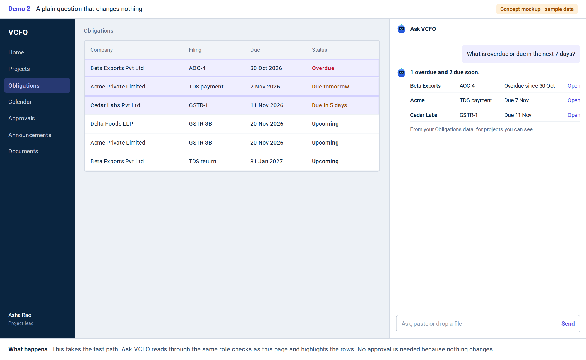
Question: "Remind Beta Exports about the missing AOC-4 documents"
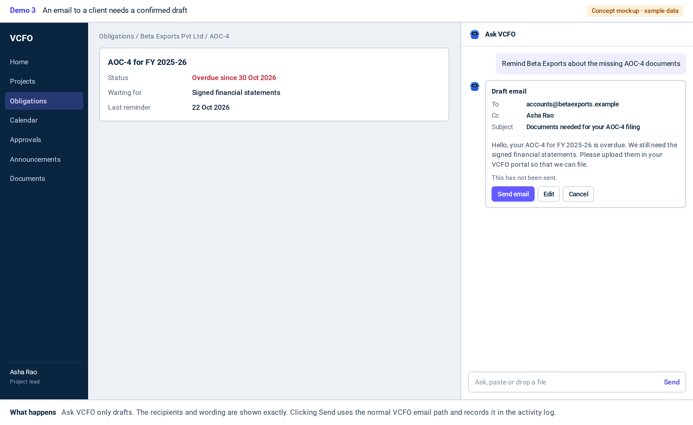
Question: "File SPICe+ Part B for Acme on MCA now"
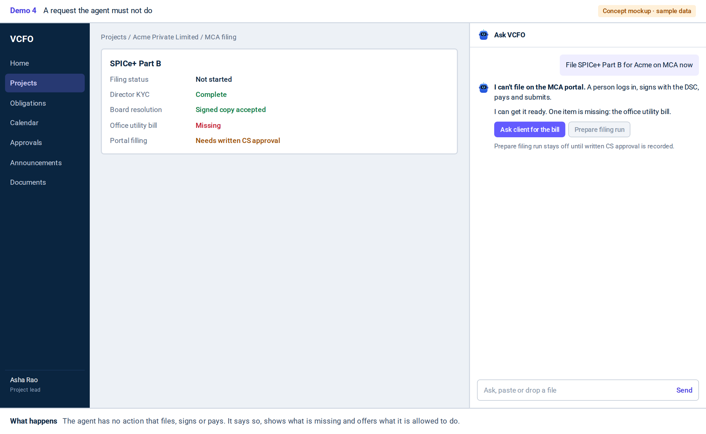
Question: "Here are our office papers"
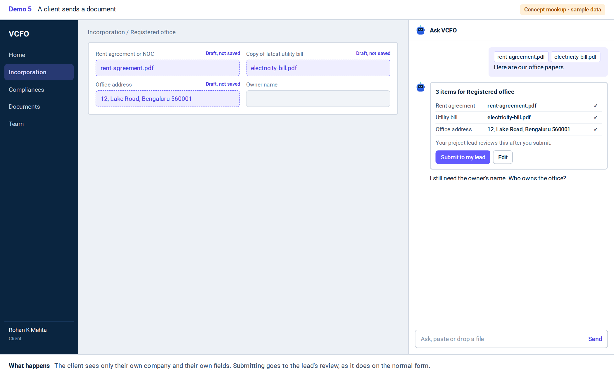